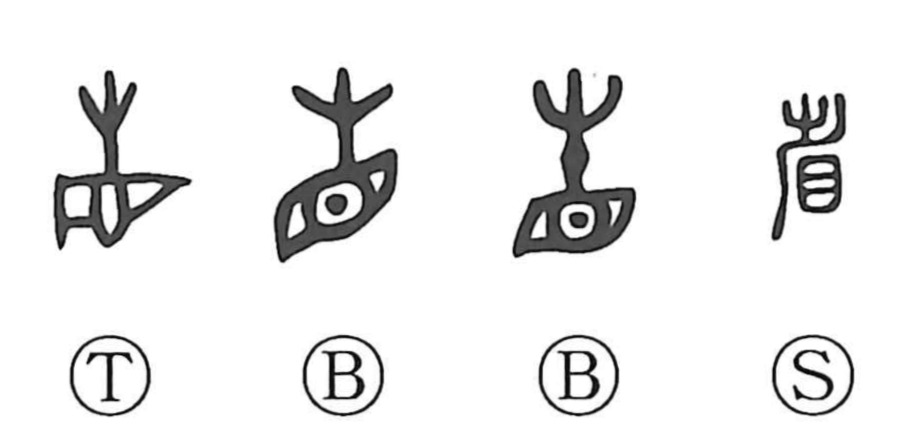

Explanation
In bronze inscription forms, the character places the eye 目 beneath 生, with 生 serving as the phonetic; in later scripts this phonetic appears as 少, which accounts for the two On readings sei and sho. The shapes 生 and 少 were likely stylized eyebrows with added decoration—adornments thought to heighten the eye’s cursing, magical power. 省 originally depicted making one’s rounds with such empowered eyes: patrolling, inspecting, and purifying. Bronze texts even record 省道, “to make the round of the road,” meaning to cleanse and exorcize the way. From this core image developed the senses of looking and self-reflection (as in seisatsu and hansei), and, by removing what ought to be taken away during inspection, the meanings “omit” and “reduce” (as in shoryaku).